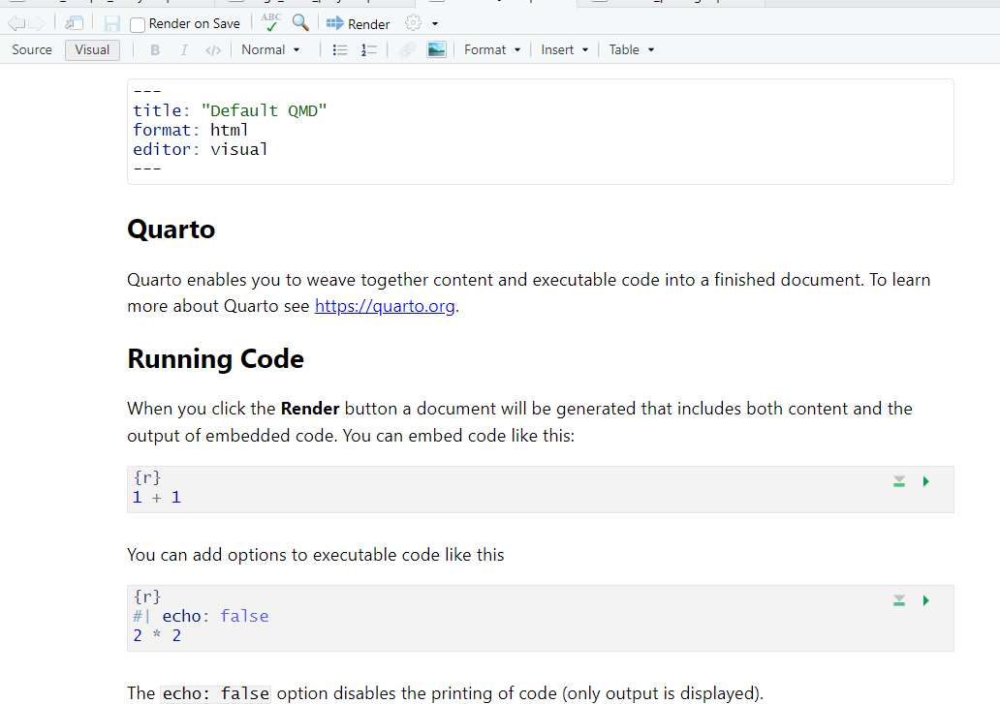

A recent collaboration led by Dr Melissa Licari of The Kids resulted in a report detailing the challenges faced by individuals (and the families that care for them) living with Tourette Syndrome (TS) and other tic disorders. The report can be found here:
https://www.thekids.org.au/impactfortourettes
This report was a summary of results of a national survey undertaken in 2023/2024, and the data analysis and preparation of figures for publication was undertaken by the Biostatistics team at The Kids.
To support production of the final publication there was considerable behind-the-scenes work, including various challenges common to a large-scale project such as this, wwhere there are many variables and outcomes of interest. For example:
Survey coverage of 7 specific impact domains, being comprised of existing validated questionnaires as well as bespoke questions, and including multiple response types (eg multiple choice, radio buttons, free-text fields)
Synthesis of data from 3 different distinct surveys (adults with tics, parents of children with tics, carers of adults with tics) having largely overlapping item/theme content but not necessarily identically matched response choices
Only partial survey completion by many respondents
Preparation of high-quality PDF output that met the needs of the production team whilst conforming to The Kids style guidelines.
Our experience with the TS collaboration has prompted us to share our approach to tackling larger-scale projects, and any insight it may provide!
2 Project design
The reproducible code-based capabilities of R, readily integrated into a suite of output options via the RStudio environment, have provided the ideal platform to compile a comprehensive document of data summaries, tabulations and graphs from which the authors of the report could draw key results for public dissemination. Furthermore, the theming and formatting features of our in-house thekidsbiostats package (https://github.com/The-Kids-Biostats/thekidsbiostats.) are a particularly useful asset for preparation of publication-ready output that conforms to The Kids style guide.
In line with current practice of our team, features of our general project design include:
Overall organisation being that of a self-contained R project with accompanying sub-directories.(See thekidsbiostats::create_project() and Figure 2.1 for project template)
Given the scale of the TS project, generation of tables and figures was further blocked into 9 different files corresponding to the distinct survey sections (background information, 7 impact domains, looking to the future). This enabled code and output to be run and checked in manageable chunks before the resulting tables and plots were reunited in an holistic file.
Figure 2.1: Directory/subdirectory setup
Use of sub-directories in the project organisation is illustrated by Figure 2.1.
Main output document files are now Quarto documents (with a .qmd extension), superseding the previous default RStudio Markdown (.Rmd) files, having more powerful capabilities but still retaining the same header-text-code structure, simplicity and flexibility. (See https://quarto.org/docs/authoring/markdown-basics.html for a useful reference.)
For those unfamiliar with Quarto, note that .qmd files can be edited and rendered from either a visual view or a source view within RStudio. The visual view aims to give format certain elements (e.g. headers, code chunks, bold/italics) as they will appear in the rendered document. source is preferred for more control over each element as the formatting syntax is visible and easily modifiable.

Figure 2.2: Visual screen of the default new QMD file
Figure 2.3: Source screen of the default new QMD file
Figure 2.4: HTML report
3 Robustness and reproducibility
It is inevitable that there will be considerable data pre-processing required prior to undertaking any analysis. (This is often the greatest challenge we find with a project.)
Important
It is therefore essential that sound data management practices are maintained.
When pre-processing data:
- Never overwrite the raw data
- Always double-check merging of different data sets is accomplished correctly.
- Check consistency of data entry/coding for the same variable sourced from different data sets
- Utilise a data dictionary, and ensure it is noted how missing values are coded
- Ensure newly created data sets are dated
- Scrutinize the final data set for anomalies prior to adopting it for analysis.
Furthermore, one ought to use an appropriate folder/file structure and workflow to ensure that the end product of the data analysis is readable, robust and reproducible. Some of the numerous things that can be used to achieve this are listed below:
Utilisation of a project template with organised sub-directories (See thekidsbiostats::create_project())
Routine ongoing checks that code as written produces the intended results when executed. (This can partly be automated by packages like targets - stay posted for a blog post about that!)
Utilisation of user-written functions, with appropriate testing, minimises errors that can creep in when reliant on cut-and-pastes or manual coding of repeated tasks.
Use of a document template for report writing that includes a run date in the header and session info at the end (See thekidsbiostats::create_template(), which creates .qmd files such as those seen above)
Inherent Quarto document features: Self-containment of the run environment, with other inputs called explicitly; auto-save with each render; text interspersed with result-producing code.
4 Streamlining and theming
Coding can be streamlined by adoption of time-saving techniques:
Setting of document-wide formatting, execution and style parameters in the document header
For example, extra lines of code in the document YAML headers to facilitate numbering (and referencing) of figure and table captions
Further refinement and definition can be accomplished by utilisation of a .css file (Note the styles.css file created and included in the document header if creating a new document using the Quarto template in thekidsbiostats package)
Figure 4.1: Example Quarto document header
Document-wide styling can be defined in the Quarto header as in Figure 4.1
Familiarisation with short-cut keys and code (eg see https://bookdown.org/yihui/rmarkdown-cookbook/rstudio-shortcuts.html )
Judicious use of bespoke functions to reduce repetitive coding eg in generation of tables and plots
Code
# Example code for bespoke functionsurvey.tblsum<-function(dat,missed="no",var_label=NULL) {if(is.null(var_label)) var_label="" SummaryTbl<-dat %>%tbl_summary(by=Survey,missing=missed) %>%add_overall(last=T) %>%bold_labels() %>%modify_header(label=var_label) %>%modify_footnote(everything()~NA)return(SummaryTbl) }
Professionalism in presentation is enhanced by consistent formatting and theming, which can be embedded into function calls. Note that loading of the thekidsbiostats package enabled easy incorporation of Barlow font and the Institute’s colour palette as specified in the brand style toolkit.
Code
# Construction of the MOVES plot that allows choice of colour scheme load("data/Moves.Rdata") # importing the MOVES data summarykids.cols<-as.vector(thekidsbiostats::thekids_colours)# ie kids.cols<-c("#F1B434","#F56B00","#00A39C","#00807A","#4A99DE","#426EA8","#1F3B73")kids.colsCMYK<-c("#FFBA26" ,"#FF5C00" ,"#00FF7D", "#0FC971","#4FA8FF","#3678FF" ,"#002EAB", "#3F5260")levs<-unique(moves.dat$type)moves.means<-subset(moves.dat,moves.dat$Day=="Best day")moves.means2<-subset(moves.dat,moves.dat$Day=="Worst day")moves.means$mean2<-moves.means2$mean[match(moves.means$type,moves.means2$type)]# a function having an argument that defines the colours to be used in the plottingdo.moves.plot<-function(my.cols=kids.cols[c(2,4)]){ggplot(data=moves.dat,aes(x=mean,y=y,group=Day,colour=Day,fill=Day))+geom_segment(data=moves.means,aes(x=mean,xend=mean2,y=y,yend=y),linewidth=0.5,linetype=2,color="grey50")+geom_point(aes(shape=Day),size=2.8)+scale_shape_manual(values=c(24,25),guide=guide_legend(nrow=1))+scale_fill_manual(values=my.cols)+scale_color_manual(values=my.cols)+scale_y_continuous(breaks=1:length(levs),labels=levs,minor_breaks=NULL)+scale_x_continuous(limits=c(0,3))+labs(x="Mean rating (/3)",y="",title="The MOVES")+theme_classic(base_family="Barlow",base_line_size=11/30)+theme(plot.title=element_blank(),axis.text.y=element_text(size=rel(1.35),colour="black"),axis.title.x=element_text(size=rel(1)),legend.text=element_text(size=rel(1)),legend.title=element_blank(),panel.grid=element_blank(),legend.position="bottom")}# Construction of a plot to be presented latermoves.plot<-do.moves.plot()movesCMYK.plot<-do.moves.plot(my.cols=kids.colsCMYK[c(2,4)])
5 Figures for publication
At the pointy end of the TS project, we were tasked with generating, in a publication-ready format, those figures which the authors had chosen to be included in the final public-facing summary report. This required close consultation with the production team to ensure that the images produced in the PDF files that were requested stayed true to the colour and font formatting as intended. After exploration of several options we settled on the cairo_pdffunction from the grDevices package in the System Library because of its superior consistency and clarity of output.
Code
# Code for generating pdf output files of the same R plot library(Cairo) # for CairoPDFlibrary(extrafont) # for embedding Barlow font into the file created by pdf loadfonts() # necessary for embedding Barlow font into the file created by pdf cairo_pdf("examples/diagProf_cairo_pdf.pdf",family="Barlow",height=3.5,width=9)plot.diagProfdev.off()CairoPDF("examples/diagProf_CairoPDF.pdf",family="Barlow",height=3.5,width=9)plot.diagProfdev.off()pdf("examples/diagProf_pdf.pdf",fonts="Barlow",height=3.5,width=9)plot.diagProfdev.off()embed_fonts("examples/diagProf_pdf.pdf",outfile="examples/embedded_diagProf_pdf.pdf")pdf("examples/diagProfCMYK_pdf.pdf",fonts="Barlow",height=3.5,width=9,colormodel="cmyk")CMYK.diagProfdev.off()embed_fonts("examples/diagProfCMYK_pdf.pdf",outfile="examples/embedded_diagProfCMYK_pdf.pdf")
Figure 5.1: Diagnosing medical professional - HTML ggplot output
Diagnosing professional
Regular HTML report output with thekidsbiostats::thekids_theme()
Figure 5.2: Generated by cairo_pdf
Diagnosing professional
The PDF as generated by cairo_pdf(…,family=“Barlow”) provides a close likeness to the HTML output of Figure 5.1, and was the preferred format of the production team.
Figure 5.3: Generated by Cairo::CairoPDF
Diagnosing professional
As noted by the production team when assessing the alternative outputs, the PDF as generated by CairoPDF(...,family="Barlow) didn’t have such clean lines in its rendering, as can be seen in the discrepancies here, when contrasted with Figure 5.1 and Figure 5.2. (Note, also, although retaining fonts in its argument list, the help file for CairoPDF says Cairo ignores this argument as it automatically detects and embeds fonts.)
Given a perceived need to also be able to work with a CMYK colour palette to facilitate true-to-colour printing, we further explored use of the pdf function (from the system library) to generate PDF figures because of the colormodel inclusion in its argument list as an optional parameter:
Figure 5.4: Diagnosing medical professional - HTML ggplot output with CMYK palette
Diagnosing professional
Regular HTML report output of a ggplot created using the CMYK palette of the The Kids brand.
Figure 5.5: Generated by pdf
Diagnosing professional
This PDF was generated by pdf(...,fonts="Barlow',colormodel="cmyk") that had as its argument the plot seen in Figure 5.5. The colour is indistinguishable from that in Figure 5.1 but the Barlow font has yet to be embedded. Note that the choice of default font seen appears to be device dependent.
Figure 5.6: Generated by extrafont::embed_fonts applied to the file output by pdf
Diagnosing professional
Formatting and theming features have been retained satisfactorily once embed_fonts(...) has been applied to the above output file of pdf(...,fonts="barlow",colormodel="cmyk") seen in Figure 5.5.
The second example is a more complicated plot of mean responses to the Motor Tic, Obsessions and Compulsions, Vocal Tic Evaluation Survey (MOVES) to assess the severity of tics during mild and peak periods. This was one of several plots where we encountered difficulties with getting the pdf/embed_fonts option to work properly.
The MOVES
Regular HTML report output
Figure 5.7: Generated by cairo_pdf
The MOVES
PDF as generated by cairo_pdf(…,family=“Barlow”), which again closely resembles the look of the HTML output
Figure 5.8: Generated by CairoPDF
The MOVES
In the PDF as generated by CairoPDF(…, family=“Barlow”) we again notice a discrepancy in line width compared to cairo_pdf()
Figure 5.9: Generated by pdf
The MOVES
In the PDF generated by pdf(…, fonts=“Barlow”), we again see a default font that is not Barlow
Figure 5.10: Generated by pdf followed by a call to extrafont::embed_fonts
The MOVES
Generation of the PDF by application of pdf(…,fonts=“Barlow”) followed by embed_fonts(…) has lost the ability to embed the Barlow font for this particular plot, whereas this approach successfully worked for the simpler Diagnosing professional plot of Figure 5.5.
6 Ongoing Challenges
There is always a balance of time investment and where to draw the line when attempting to further one’s technical prowess, particularly with R coding! While often times a quick google (or ChatGPT) will help you find a solution relatively quickly, we found here that there seems to be a lack of clear online guidance around PDF exporting options and output discrepancies (embedding issues, default fonts dependency on machine/OS, CMYK for printing vs HTML colour).